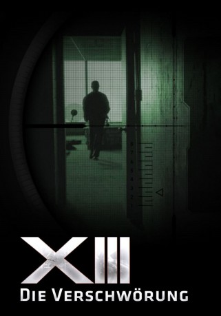
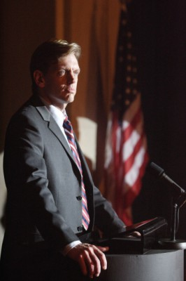
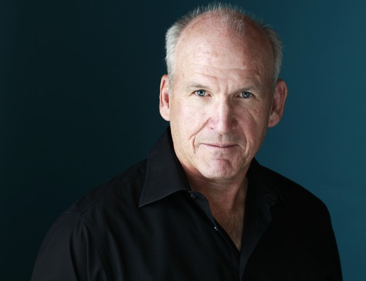

#4440 XIII - Die Verschwörung
Alternativ: XIII: The Conspiracy (Englischer Titel)
 
 IMDB-Wertung: 6.7 / 10
IMDB-Wertung: 6.7 / 10  Metascore: 0
Metascore: 0 
Während einer öffentlichen Ansprache wird die amerikanische Präsidentin durch die Kugel eines anonymen Attentäters getötet, bei dem einzig eine auffällige Tätowierung erkennbar ist. Monate später wird ein Mann gefunden, der seine Erinnerung verloren hat. An seinem Hals hat er die Zahlen ‚XIII‘ eintätowiert und er verfügt über erstaunliche Reflexe und scheint, eine militärische Ausbildung genossen zu haben. Ist er der Scharfschütze, der überall gesucht wird? XIII wird in eine weit verzweigte Verschwörung hineingezogen und gnadenlos von der Regierung und den Geheimdiensten gejagt …
Jahr: 2008
Dauer: 172 Minuten
FSK:
Land: Frankreich Studio: EuroVideoTonspuren: DD5.1 - ,
Untertitel:
Auflösung: 1080p (1920x1080) Größe: 11468 MB
Genre: Action, Thriller, Krimi, Mystery
Regisseur: Duane Clark
Drehbuch: Atilla Engin
Soundtrack:
Darsteller:
 Stephen Dorff als Ross Tanner
Stephen Dorff als Ross Tanner Caterina Murino als Sam
Caterina Murino als Sam- Greg Bryk als Colonel Amos
 Stephen McHattie als General Carrington
Stephen McHattie als General Carrington Lucinda Davis als Jones
Lucinda Davis als Jones Jonathan Higgins als Calvin Wax
Jonathan Higgins als Calvin Wax-  Ted Atherton als Wally Sheridan
-  John Bourgeois als President Galbrain
- Jessalyn Gilsig als Kim Rowland
 Mimi Kuzyk als Sally Sheridan
Mimi Kuzyk als Sally Sheridan- Cedric Smith als Abe Miller
 Val Kilmer als La Mangouste
Val Kilmer als La Mangouste- Luke Vitale als Agent Standwell
- Gouchy Boy als Malick
- Todd Sandomirsky als Agent Kohn
- Andrew Jackson als Roger Deakins
- Daniel DeSanto als T.A.
 Matt Baram als HSA Coroner
Matt Baram als HSA Coroner Julian Richings als Mr. Cody
Julian Richings als Mr. Cody- Jacqueline Pillon als XX
- Artur Gorishti als Cabbie
- Dan MacDonald als Homeland Security Agent
- Michael Giel als White House Media Agent
- François Mequer als Homeland security agent
- Barbara Gordon als Martha Miller
- Dan Duran als Warren Glass
- Victoria Goring als Bethesda Bystander
- Hrant Alianak als Dr. Kimmler
- Catherine Swing als Debate Moderator
- Rachelle White Wind Arbez als Homeland Security Agent
- Roland Rothchild als Homeland Security Agent
- Ronn Sarosiak als Norman Ryder
- Nigel Shawn Williams als Ellery Shipley
- Peter James Haworth als Jasper Winthrow
- Patrick Haye als Policier Bethesda
- J.C. Kenny als Journaliste Arlington
- Donna Skelly als Newscaster
- Scott Wickware als Agent McCall
- Dave Dunham als White House Aide
- Julie McLeod als Wally's Wife
Datei: X:\2008(N-Z)\XIII - Die Verschwörung (2008, FSK, 1920x1080).mkv seit 19.09.2016
Festplatte: HD 2008(G-Z)-2009(A-F)
 Es gibt insgesamt 91 Filme in der Gruppe '2008(N-Z)'
Es gibt insgesamt 91 Filme in der Gruppe '2008(N-Z)'